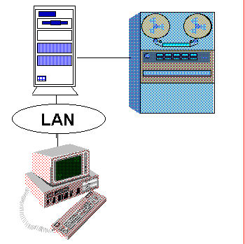

INFO'94 - OL på Lillehammer

- Info-system for alle akkrediterte under Lillehammer-OL
- 42.000 brukere. Brukervennlig grafisk grensesnitt
- Tre språk: Norsk, engelsk og fransk
- Klient/tjener-system med en vertsmaskin i Oslo, 20 filtjenere og
1.200 PCer spredd utover 12 arenaer fra Hamar i sør til Ringebu i nord
- Virket perfekt fra første dag!
- Baserer seg på Foundation for Cooperative Processing